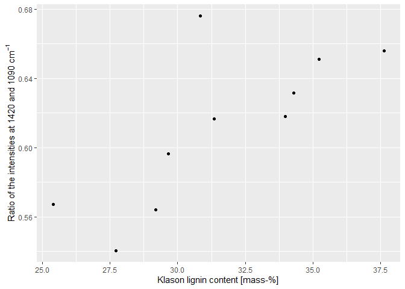

Overview
‘irpeat’ is an R package that contains simple functions to analyze infrared spectra of peat samples. Some functions may also work with organic matter samples in general.
Provided functions for analyzing infrared spectra of peat are:
- Computation of several humification indices.
- Klason lignin mass fraction (following Hodgkins et al. (2018) and Teickner and Knorr (2022)) (note that these models are not reliable for peat, see Teickner and Knorr (2022)).
- Holocellulose mass fraction (following Hodgkins et al. (2018) and Teickner and Knorr (2022)) (note that these models are not reliable for peat, see Teickner and Knorr (2022)).
- Peat electron accepting capacity (following Teickner, Gao, and Knorr (2022)).
- Peat electron donating capacity (following Teickner, Gao, and Knorr (2022)).
How to install
You can install ‘irpeat’ from GitHub using R via:
remotes::install_github(repo = "henningte/irpeat")‘irpeat’ relies on the R package ‘ir’ for handling infrared spectra.
How to use
You can load ‘irpeat’ in R with:
You can test ‘irpeat’ with sample data from the R package ‘ir’:
ir::ir_sample_data
#> # A tibble: 58 × 7
#> id_measurement id_sample sample_type sample_comment klason_lignin
#> <int> <chr> <chr> <chr> <units>
#> 1 1 GN 11-389 needles Abies Firma Momi fir 0.359944
#> 2 2 GN 11-400 needles Cupressocyparis leylandii… 0.339405
#> 3 3 GN 11-407 needles Juniperus chinensis Chine… 0.267552
#> 4 4 GN 11-411 needles Metasequoia glyptostroboi… 0.350016
#> 5 5 GN 11-416 needles Pinus strobus Torulosa 0.331100
#> 6 6 GN 11-419 needles Pseudolarix amabili Golde… 0.279360
#> 7 7 GN 11-422 needles Sequoia sempervirens Cali… 0.329672
#> 8 8 GN 11-423 needles Taxodium distichum Cascad… 0.356950
#> 9 9 GN 11-428 needles Thuja occidentalis Easter… 0.369360
#> 10 10 GN 11-434 needles Tsuga caroliniana Carolin… 0.289050
#> # … with 48 more rows, and 2 more variables: holocellulose <units>,
#> # spectra <named list>ir::ir_sample_data contains various ATR-MIR spectra of organic reference material (e.g. newspaper, wood, grass).
A simple workflow could be, for example, to baseline correct the spectra (using functions of the package ‘ir’) compute various humification indices and Klason lignin and holocellulose mass fractions in the samples. We use only the first few spectra from ir::ir_sample_data to speed the computations a bit up.
x <-
ir::ir_sample_data[1:10, ] %>% # data
ir::ir_bc(method = "rubberband") %>% # baseline correction
irpeat::irp_hi() %>% # humification indices
irpeat::irp_klason_lignin_2(do_summary = TRUE) # Klason lignin contentx is identical to ir::ir_sample_data[1:10, ], but contains additional columns for the computed humification indices (h1, h2, h3, h4) and the computed Klason lignin content (klason_lignin_2)
x
#> # A tibble: 10 × 12
#> id_measurement id_sample sample_type sample_comment klason_lignin
#> * <int> <chr> <chr> <chr> [1]
#> 1 1 GN 11-389 needles Abies Firma Momi fir 0.360
#> 2 2 GN 11-400 needles Cupressocyparis leylandii… 0.339
#> 3 3 GN 11-407 needles Juniperus chinensis Chine… 0.268
#> 4 4 GN 11-411 needles Metasequoia glyptostroboi… 0.350
#> 5 5 GN 11-416 needles Pinus strobus Torulosa 0.331
#> 6 6 GN 11-419 needles Pseudolarix amabili Golde… 0.279
#> 7 7 GN 11-422 needles Sequoia sempervirens Cali… 0.330
#> 8 8 GN 11-423 needles Taxodium distichum Cascad… 0.357
#> 9 9 GN 11-428 needles Thuja occidentalis Easter… 0.369
#> 10 10 GN 11-434 needles Tsuga caroliniana Carolin… 0.289
#> # … with 7 more variables: holocellulose [1], spectra <list>, hi1 <dbl>,
#> # hi2 <dbl>, hi3 <dbl>, hi4 <dbl>, klason_lignin_2 (err) [g/g]Plot of the humification index (ratio of the intensities at 1420 and 1090 cm-1 (Broder et al. 2012)) versus the Klason lignin content:
ggplot2::ggplot(x, aes(x = quantities::drop_quantities(klason_lignin_2) * 100, y = hi1)) +
ggplot2::geom_point() +
ggplot2::labs(x = "Klason lignin content [mass-%]",
y = expression("Ratio of the intensities at"~1420~and~1090~cm^{-1}))
All computed quantities come with units and standard errors (thanks to the quantities package):
x$klason_lignin_2
#> Units: [g/g]
#> Errors: 0.05332995 0.03879912 0.03466596 0.03945795 0.03532837 ...
#> V1 V2 V3 V4 V5 V6 V7 V8
#> 0.3763523 0.3422666 0.2545192 0.3087898 0.2965548 0.2768367 0.3138414 0.3517650
#> V9 V10
#> 0.3388824 0.2918090Future development
Henning Teickner plans, as part of his PhD project, to extensively extent ‘irpeat’ by developing a set of calibration models that can predict various peat physicochemical properties from mid infrared spectra. These models should be finished by September 2024. Currently, a data compendium (pmird) is developed to collect the data required for this task.
How to cite
Please cite this R package as:
Henning Teickner, Suzanne B. Hodgkins (2022). irpeat: Functions to Analyze Mid Infrared Spectra of Peat Samples. Accessed 2022-07-29. Online at https://github.com/henningte/irpeat.
Licenses
Text and figures : CC-BY-4.0
Code : See the DESCRIPTION file
Data : CC BY 4.0 attribution requested in reuse. See the sources section for data sources and how to give credit to the original author(s) and the source.
Contributions
We welcome contributions from everyone. Before you get started, please see our contributor guidelines. Please note that this project is released with a Contributor Code of Conduct. By participating in this project you agree to abide by its terms.
Sources
The data and prediction models for holocellulose and Klason lignin (irp_content_h_hodgkins_model, irp_content_kl_hodgkins_model) are derived from Hodgkins et al. (2018) and were restructured to match the requirements of ir. The original article containing the data can be downloaded from https://www.nature.com/articles/s41467-018-06050-2 and is distributed under the Creative Commons Attribution 4.0 International License (https://creativecommons.org/licenses/by/4.0/). The data on Klason lignin and holocellulose content was originally derived from De La Cruz, Florentino B., Osborne, and Barlaz (2016).
Modified prediction models for holocellulose and Klason lignin (model_holocellulose_2, model_klason_lignin_2) are derived from Teickner and Knorr (2022).
Data and models for the electrochemical accepting and donating capacities (EAC, EDC) of peat were derived from Teickner, Gao, and Knorr (2022) and Teickner, Gao, and Knorr (2021)
This packages was developed in R (R version 4.2.0 (2022-04-22 ucrt)) (R Core Team 2019) using functions from devtools (Wickham, Hester, and Chang 2019), usethis (Wickham and Bryan 2019), rrtools (Marwick 2019) and roxygen2 (Wickham et al. 2019).